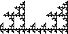
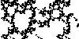

| We begin with three simple examples. |
|
|
|
| These examples illustrate the general situation: if some
combination of Tin...Ti1 of
transformations never occurs, then all subsquares with addresses containing
the sequence in...i1 must be empty. |
| The transformation combinations that never occur are called
forbidden combinations.
For example, if T4 never immediately
follows T1, we say 41 is a forbidden pair. |
|
|
|
|  |
Different combinations of forbidden pairs can generate some very
interesting pictures. Here are some examples. |
|
|
When can the picture generated by a Driven IFS determined
by forbidden pairs also be generated by an IFS with no forbidden combinations and
all transformations similarities, but perhaps with more than four transformations? The
answer can be read from the graph. |
|
|  |
Any triple containing a forbidden pair is a forbidden triple, but there
also are driven IFS having forbidden triples
containing no forbidden pairs, forbidden quadruples containing no forbidden triples, and
so on. One measure of the complexity of a fractal is the size of the smallest
collection of forbidden combinations necessary to produce the fractal. Here are
some examples with forbidden triples. |
|